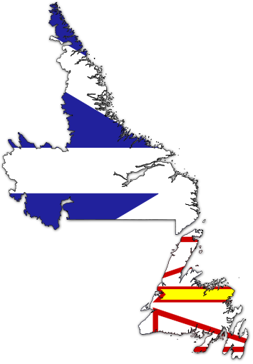

About PGI NL

Founded by the late Peter Gzowski, the PGI’sare held annually in all provinces and territories across our great country. In addition to a fantastic game of golf, the PGI offers a unique and fun-filled event of poetry, music, a special guest celebrity and, most importantly, a celebration of literacy.
The first Peter Gzowski Invitational Golf Tournament for Literacy took place in 1986 with a commitment from the former broadcaster to someday raise $1 million across Canada for literacy programs. Today there are PGI tournaments in every province and territory and our generous supporters have raised more than $13 million.
2015 will mark the 25th Anniversary of the PGI’s in Newfoundland and Labrador and to date have raised over approximately $700,000.00 in the province and all proceeds from each PGI are used to support much needed programs and services to help people read, write and understand the written word. These programs not only help people read and write, but enable them to participate more fully in society. This demonstrates that a commitment to literacy is truly a commitment to our province, the people and its future.
PGI Newfoundland and Labrador is a not-for profit organization and the sole administrator of revenues raised by PGI events in our province.All of the funds raised are invested in literacy programs across Newfoundland and Labrador, resulting in improved service and access for everyone.
In Newfoundland & Labrador, the PGI Charity golf tournament is held at the beautiful Bally Haly Golf & Curling Club in St. John’s. It kicks off in the second week of June each year which is otherwise known as ‘spring planting week’, the last chance of frost has passed. Each year eager golfers jump at the opportunity to participate in Newfoundland’s first and favourite tournament of the year.
Traditionally, the PGI-NL consists of three highly anticipated events spanning over three fun-filled days. The first is a Family Literacy Festival, celebrating the value of learning early and lifelong literacy skills. At this festival community literacy organizations come together to produce a wonderful learning environment where the importance of literacy is shared with our children in a fun and entertaining atmosphere.
The second of our PGI events is the annual"Charity Golf Event". This event is to provide recognition of the greatly appreciated sponsors and supporters of the PGI throughout our community. Golfers, corporate citizens, sponsors, donors and volunteers rise to answer the call of the greens: the Golf Tournament itself. The tournament has proven to be a fantastic time with team challenges and camaraderie, sponsored hole activities, prizes, surprises, and delicious refreshments to get through the day.
A banquet lunch follows the golf day activities to honour the winners of the day’s challenges, another thank you to our sponsors, and an opportunity to enjoy some local entertainment. The highlight of the day is the announcement and recognition of "The PGI Learner Achievement Award" which ispresented to a carefully selected recipient, recognizing the achievements of an individual who has enhanced their life by striving for greater literacy skills and theThe Ellsworth Childrens Literature Contestwinner is announced, alongwith recognition of the many supporter of this years PGI.
If some how you have not gotten your fill from the weekend’s festivities, it is also iceberg-alley week where you can see the dance of icebergs and whales just outside the St. John’s narrows. Best you come and see this one for yourselves!